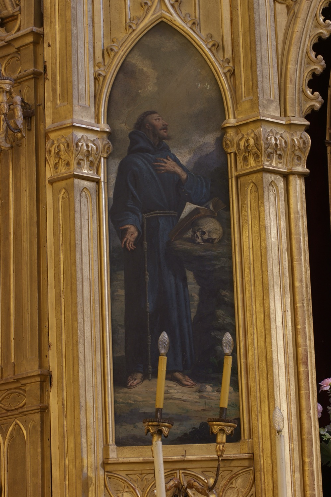

Sant Francesc d’Assís (1182-1226) és una de les grans figures de l’espiritualitat cristiana i un dels sants més populars. Va néixer a Assís (Itàlia) en una família rica i tengué una joventut mundana i malbaratadora, però, arran d’una visió mística de Crist crucificat, canvià completament de vida, repartí el seu patrimoni entre els pobres i, segons les seves paraules, “es casà amb donya Pobresa”. Va ser el fundador de l’Orde dels Frares Menors, o Orde Franciscà, una orde de frares humils, mendicants i predicadors. També fundà, amb santa Clara, l’Orde de les Germanes Pobres, conegudes com a clarisses, i un tercer orde, el dels terciaris, per acollir els laics que volguessin viure segons els seus ideals. Dos anys abans de morir, Crist li imprimí els estigmes a les mans, als peus i al costat, que conservà fins a la mort i que procurava amagar per humilitat.
En aquesta pintura, el pintor Agustí Buades i Muntaner (s. XIX) el representa de la manera tradicional, com un home jove, amb barbeta i tonsura. Vesteix l’hàbit franciscà amb el cordó amb tres nusos que representen els vots de pobresa, castedat i obediència de l’orde. El color gris, color de la cendra, va ser el dels hàbits franciscans fins al segle XIX. Mostra a les mans els estigmes que li imprimí Crist. La calavera representa la “germana Mort”, de la qual sant Francesc deia que no l’hem de témer perquè ens obri la porta del Cel. El llibre simbolitza les Escriptures i la predicació evangèlica, fonament de la seva forma de vida.